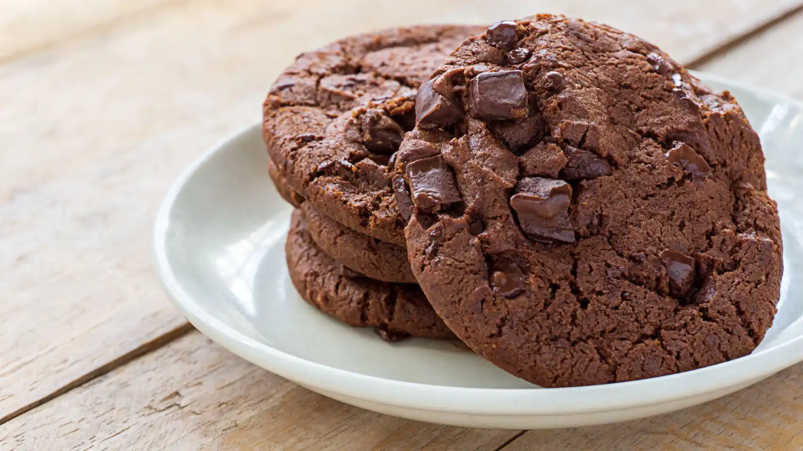
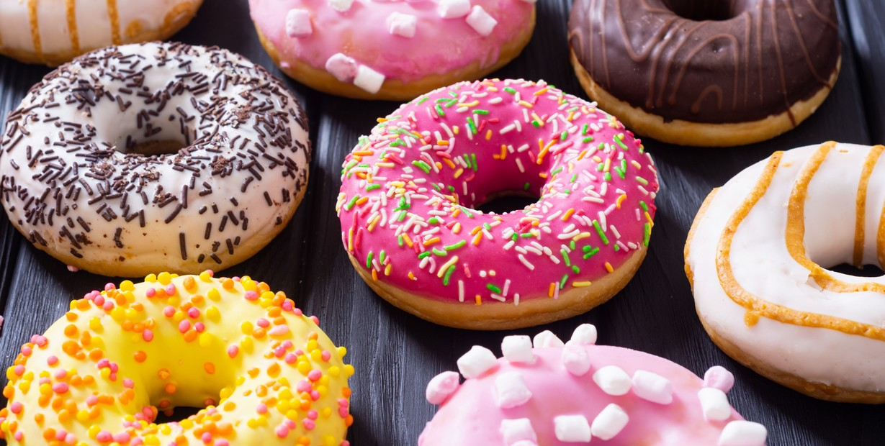

Nuestras opciones de cafetería

Galletas de Temporada

Brownies Signature

Donas
Galletas de Temporada
Brownies Signature
Donas
"En La Taza Digital, cada café es una pausa consciente, un impulso creativo y un punto de encuentro entre lo digital y lo humano. Más que una cafetería, somos el rincón donde las ideas fluyen, las conexiones se crean y cada sorbo te inspira a seguir adelante."

$8.00
"Origen Rosado" es una edición especial pensada para celebrar la pureza del café natural con un toque de estilo. Inspirada en la suavidad del color rosa y la fuerza de lo ecológico, esta presentación combina lo mejor de ambos mundos: un café de origen 100% natural, cultivado sin pesticidas, y presentado con un diseño que transmite calidez, cuidado y frescura.
Una experiencia única para quienes aman el café y el planeta.